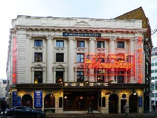

ЗАСТРЯТЬ В МЫШЕЛОВКЕ
Сегодня годовщина, когда стартовал марафон, которому не видно конца. В 1952 году в лондонском театре «Амбассадорс» состоялась премьера детективной драмы Агаты Кристи «Мышеловка». Спектакль шел там 22 года, потом, не расплескавшись, переместился в соседний «Сент-Мартинс Театр» и продолжает исполняться каждый божий день, а иногда и по два раза. Это самая долгоживущая в истории драматическая постановка — под тридцать тысяч спектаклей.
Даже в японском Кабуки-дза меняют репертуар и экспериментируют с формой. А в «Сент-Мартинс», кажется, больше ничего не идет — только вечная «Мышеловка». Актеры угодили в нее намертво, не выбраться.
Каждый раз, проходя или проезжая мимо, я ежусь от жути. Вот как, как эти творческие люди живут и выживают? Каждый день одно и то же, одно и то же. Это даже не мышеловка — в конце концов мышку вытащат и прибьют, ее страдания скоро закончатся. Это какая-то белка в колесе!
А зрители? Ведь девять из десяти читали повесть и знают, кто преступник. Я плохо представляю себе, как вообще можно поставить хорошо всем знакомый детектив на сцене или в кино. В свое время даже нарочно поменял злодея в сценарии фильма «Турецкий гамбит» — чтоб читавшие роман в финале ахнули.
Друзья мои, не превращайте вашу жизнь в театр «Сент-Мартинс». Не запирайте себя в мышеловку, не бегайте белкой в колесе. Даже если за это хорошо платят (а в лондонском театре, спасибо туристам, всегда аншлаг).